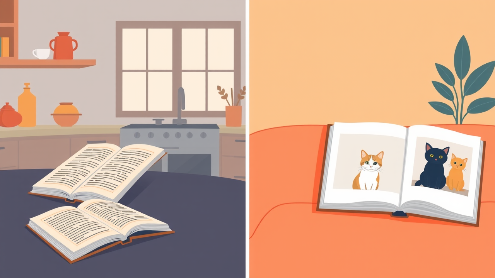

De Beginnersgids voor Iedereen
Géén jargon. Géén technische kennis. Gewoon nieuwsgierigheid.
▼ swipe of pijltjes om verder te gaan ▼
AI leert van voorbeelden, niet van regels.
Software = kookboek | AI = leren door te zien

🔍 Tonen
Je laat de AI duizenden voorbeelden zien.
Net als: je laat een kind zien hoe je fietst.
🧠 Patronen Vinden
De AI ontdekt zelf wat bij elkaar hoort.
Net als: je leert balans houden zonder handleiding.
🔄 Verbeteren
Foutje? Bijsturen en opnieuw proberen.
Net als: vallen, opstaan, weer doorgaan.
Een simpel voorbeeld: de AI probeert te herkennen of een foto een kat is.
Input: duizenden foto's van katten, honden en fietsen.
Patronen: oren, snorharen, vorm, kleuren en context worden verbonden.
Voorspelling: "ik denk: kat — 87% zeker".
Feedback: fout? Dan worden de verbindingen bijgesteld.
Zonder dat je het doorhebt, elke dag:
"Omdat je keek naar…" — AI raadt wat jij leuk vindt
Jouw gezicht herkend tussen miljoenen anderen
Hele zinnen vertalen — niet woord-voor-woord
Nepmail herkennen vóór jij hem ziet
Generatieve AI maakt nieuwe tekst, beelden en muziek op basis van jouw opdracht.
Prompt: “Schrijf een vriendelijke uitnodiging voor een buurtbarbecue. Maximaal 5 zinnen.”
Prompt: “Maak een futuristische, vriendelijke AI-assistent in een klaslokaal.”
Deze visual is gemaakt met AI en daarna netjes in de slide geplaatst.
Prompt: “Maak een vrolijk synth-pop nummer over nieuwe ideeën en technologie.”
Zie AI als een behulpzame assistent die voorbeelden kan uitwerken.
E-mails, brieven, verhalen
Lange teksten in 3 zinnen
50+ talen, mét context
Ideeën, namen, slogans
Jij vraagt: “Mijn printer print niet, maar hij staat wel aan. Wat moet ik controleren?”
Jij vraagt: “Ik heb kip, paprika, rijst en kaas. Wat kan ik koken?”
Jij vraagt: “Schrijf een nette mail naar mijn verzekering over een schadeclaim.”
Jij vraagt: “Weekend weg in Nederland, max €200, met hond.”
Via internet. Makkelijk, krachtig, vaak deels gratis.
Op je eigen PC. Privé, offline mogelijk, vraagt meer hardware.
Assistenten die stappen plannen, tools gebruiken en werk uitvoeren.
Cloud AI draait op grote servers van bedrijven zoals OpenAI, Google, Microsoft of Anthropic.
Goed om te starten. Soms daglimieten, wachttijd of minder krachtige modellen.
Sneller, betere modellen, meer gebruik en vaak extra functies zoals bestanden analyseren.
Beheer, meer privacy-instellingen, samenwerken en zakelijke beveiliging.
Download een AI-model
bijv. via Ollama of LM Studio
Het draait op jouw PC
CPU/GPU doet het rekenwerk
Je stelt vragen lokaal
data hoeft niet naar internet
Output blijft privé
handig voor gevoelige info
Voor beelden gebruiken makers vaak tools zoals ComfyUI; voor tekst bijvoorbeeld Ollama of LM Studio.
“Maak een presentatie over AI.”
De agent splitst het werk in stappen.
Zoekt, schrijft, maakt bestanden of test code.
Controleert of het resultaat werkt.
AI is het NU.
Route-optimalisatie, verkeersvoorspelling, pakketbezorging en rijhulpsystemen.
Röntgenfoto’s analyseren, ziektes eerder herkennen en artsen helpen met samenvattingen.
Afbeeldingen, muziek, video-effecten en inspiratie voor ontwerpers en makers.
Ondertiteling, spraak-naar-tekst, voice assistants en real-time vertaling.
Objecten herkennen, achtergrond verwijderen, beelden verbeteren — maar ook deepfake-risico’s.
Voorraad voorspellen, productaanbevelingen en klantenservice via chatbots.
AI voorspelt woorden — het begrijpt niet wat het zegt
Geen emoties. Geen bewustzijn. Het lijkt alleen maar zo.
AI kan vol overtuiging fout zijn!
Behandel AI als een enthousiaste stagiair: geef context, taak, formaat en toon.
“Vertel eens iets over geschiedenis.”
“Leg in 3 simpele zinnen uit waarom de Berlijnse Muur viel, alsof je het aan een 12-jarige uitlegt.”
“Schrijf een nette klachtmail over een pakket dat te laat is. Houd het vriendelijk maar duidelijk.”
“Leg wifi uit alsof ik 8 jaar ben. Gebruik één vergelijking en maximaal 5 zinnen.”
Deel nooit wachtwoorden, banknummers of medische gegevens
AI kan overtuigend fout zijn. Check belangrijke info altijd.
Hoe beleefder jij bent, hoe behulpzamer het antwoord
Ga naar chat.openai.com — gratis, direct aan de slag.
Deze hele presentatie is gemaakt door AI:
Idee → AI Kunst → AI Code → AI Tekst → Presentatie!
📺 En nu op je TV!
Zes woorden die beginners vaak tegenkomen.
Meer leren? chat.openai.com • Vraag het aan AI!
Vragen? Steek je hand op! 🙋